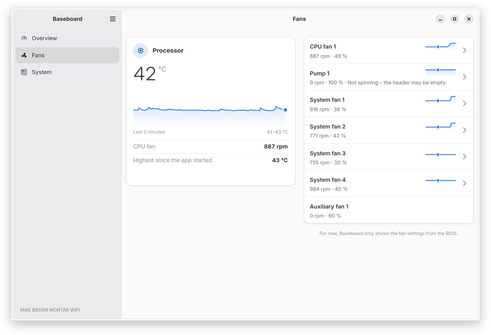
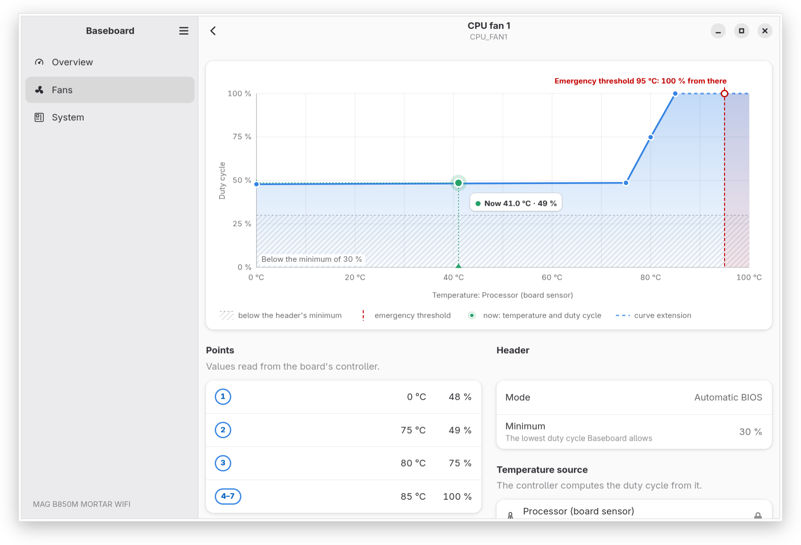
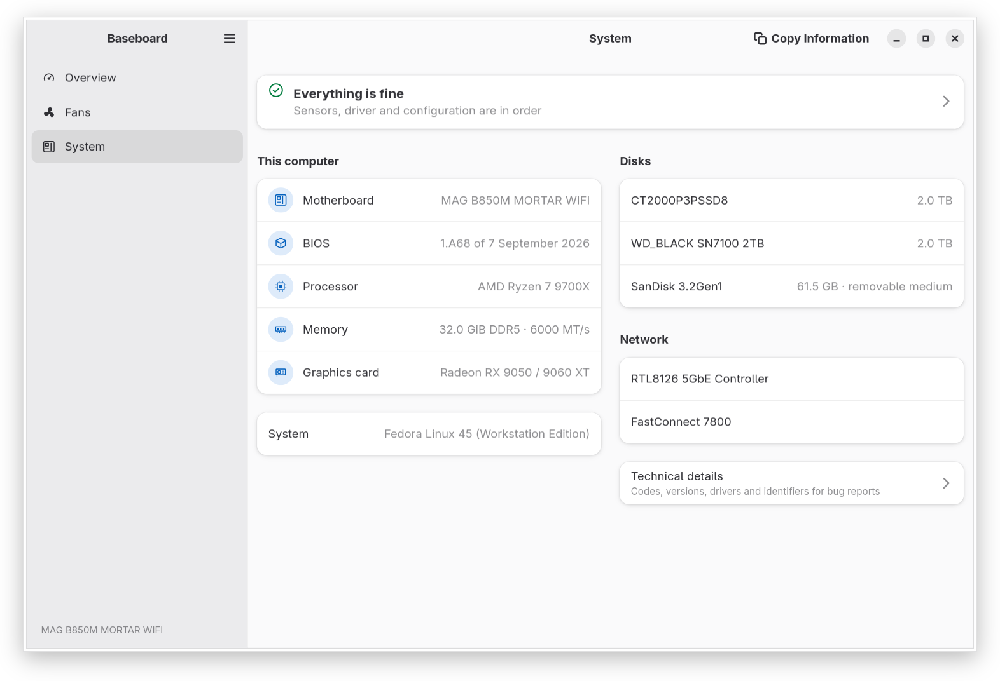

What it shows today
Baseboard shows readings, fan curves and system information and does not change any setting yet. The current release is 0.2.0.
- An Overview with the processor, graphics card and board, each with its temperature over the last five minutes, the fans, memory and disks, and one sentence that says whether everything is fine. It warns when the processor gets very hot, when the CPU fan stops and when a voltage is outside its tolerance.
- A Fans page with the speed and duty cycle of every fan, named after the headers printed on the board, and the curve the board runs each fan by, where the kernel driver reports curves (see Fans and the kernel). With the driver of a released kernel it shows the speeds and temperatures.
- All sensors: every temperature, fan speed and voltage with its source and its range since the app started, voltages rated against their tolerance.
- A System page with the board, BIOS, processor, memory, graphics card and disks, and the details and the state of the fan driver one click away.
- A “Copy Information” button with a text for bug reports, without serial numbers or MAC addresses.
- English and Polish.



How it works
For sensors and fans Baseboard relies only on the kernel drivers and their standard hwmon interface in sysfs, through libsensors where it is installed. It has no hardware access of its own: no I/O ports, no /dev/port or /dev/mem, and nothing in user space writes to the embedded controller (EC). It runs as a normal user.
What belongs to one board, such as the names of its fan headers and the tolerances of its voltages, is kept in a board profile, a data file. The point of reference is the sensor and fan part of MSI Center on Windows.
Fans and the kernel
Fan control on these boards depends on the nct6683 kernel driver. Baseboard does not check the kernel version. It reads the sysfs attributes of each fan channel and decides from them what the driver allows; the System page shows this level. Since 0.2.0 Baseboard shows the fan curves where the driver reports them; with the driver of a released kernel it shows the fan speeds and temperatures. Fan control comes in a later version, and from then on each level below unlocks by itself once the kernel provides it, without a new release of Baseboard.
| Level | What Baseboard does | What it needs from the kernel | State in the kernel |
|---|---|---|---|
| Read only | Readings and fan speeds, with a note that control needs a newer driver (0.2.0) | The nct6683 driver for the board’s NCT6687D-R chip | In current kernels |
| Manual control | A fixed duty cycle per header, set through a system helper (later) | Writable pwmN and pwmN_enable, and their restore after resume | In hwmon-next, the hwmon maintainer’s tree; not in a released kernel yet |
| Curve view | The fan curves stored in the EC and their temperature source, read only (0.2.0) | Readable pwmN_auto_point* and pwmN_auto_channels_temp | In hwmon-next; not in a released kernel yet |
| Curve editing | Editing the seven-point curves in the EC; they keep working without the app (later) | Writable pwmN_auto_point* | Patches in review on linux-hwmon: v1 thread |
| Temperature source | Choosing the sensor a curve follows (later) | Writable pwmN_auto_channels_temp | Planned, not sent yet |
Patches in review may change or may not be accepted. If a patch changes its interface, Baseboard will follow it.
Kernel work
Support for this board in the Linux kernel is being developed alongside the app, in the mainline kernel tree.
In released kernels
Sound
In the mainline tree, not in a released kernel yet
hwmon (sensors and fans)
- Documentation: hwmon: (nct6683) Add MSI B850M to list of tested boards
f9c5d495e22f
In hwmon-next, the hwmon maintainer’s tree
hwmon (sensors and fans)
- hwmon: Add driver for MSI Mystic Light controller voltage sensorswith documentation and a MAINTAINERS entry
- hwmon: (nct6683) Remove the 32 mV voltage scale
- hwmon: (nct6683) Report the fan curves of MSI boards with NCT6687D-Rwith documentation
- hwmon: (nct6683) Restore manual fan control after resume
- Tested-by: four changes to the
msi_mystic_lightdrivertested on this board
In review on linux-hwmon
hwmon (sensors and fans)
Supported boards
One board is verified: MAG B850M MORTAR WIFI (MS-7E61), PCB revision 1. On other computers Baseboard runs in a generic mode: the readings are there, without the board’s header names and without fan control.
Profiles of other boards will come only from their manuals, public sources and tests on the hardware. Until the header mapping is tested on a board, its profile shows readings and names without fan control.
Report your board
Open an issue on GitHub and paste the text from System → Copy Information. It holds the board model and code, the BIOS, the hwmon devices and the fan driver level, and no serial numbers or MAC addresses.
Install
Baseboard comes as a Flatpak. A release on Flathub will be considered after fan control lands.
From the bojanowski.me repository (recommended)
The repository is signed and shared with the author’s other apps. Updates come with a regular flatpak update; the GNOME runtime comes from Flathub.
flatpak remote-add --user --if-not-exists flathub https://dl.flathub.org/repo/flathub.flatpakrepo
flatpak remote-add --user --if-not-exists bojanowski https://flatpak.bojanowski.me/bojanowski.flatpakrepo
flatpak install --user bojanowski me.bojanowski.BaseboardFrom the release file
Download me.bojanowski.Baseboard.flatpak from the latest release on GitHub and install it. Flatpak takes the GNOME runtime from Flathub. A package installed this way does not update itself; install a newer release the same way.
flatpak install --user me.bojanowski.Baseboard.flatpakThe Flatpak reads the sensors and the system information with read-only access to the udev database. It does not see the system’s lm-sensors configuration, so its labels and ignore statements do not apply; the board’s readings are still scaled and named from its profile. To use the configuration, give the app read-only access to the whole of /etc:
flatpak override --user --filesystem=host-etc:ro me.bojanowski.BaseboardFrom the sandbox Baseboard cannot see other programs that control fans, and the System page says so.
From source
Requires Rust 1.92 or newer, GTK 4.22, libadwaita 1.9 and Meson 1.1.
git clone https://github.com/TomaszBojanowski/baseboard.git
cd baseboard
meson setup build
meson compile -C build
meson devenv -C build ./crates/app/baseboardYour own Flatpak build
The manifest uses the GNOME 51 runtime and builds without network access for the Rust dependencies.
flatpak-builder --user --install --install-deps-from=flathub --force-clean \
build/flatpak build-aux/flatpak/me.bojanowski.Baseboard.json
flatpak run me.bojanowski.BaseboardPlans
Next: fan control
After the curve view of 0.2.0, a small system helper (D-Bus and polkit) that is the only part allowed to change fan settings, then manual mode and a curve editor. The helper cannot be part of a Flatpak and will come as a separate system package. It follows fixed safety rules:
- minimum duty cycles for the CPU fan and the pump;
- the pump never stops;
- curves for the CPU and the pump reach 100 % by the emergency temperature;
- headers in manual mode return to firmware control when the helper exits or crashes, before shutdown, and when a temperature passes its emergency threshold;
- settings last until the next reboot;
- control only on a board whose profile matches, PCB revision included, and only on headers whose writes were tested on that board.
Under consideration
These are ideas without a schedule, and they may not happen:
- onboard RGB lighting;
- power profiles and restarting into the firmware setup;
- help with BIOS updates without flashing from the running system.